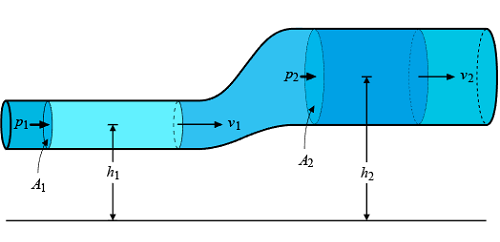
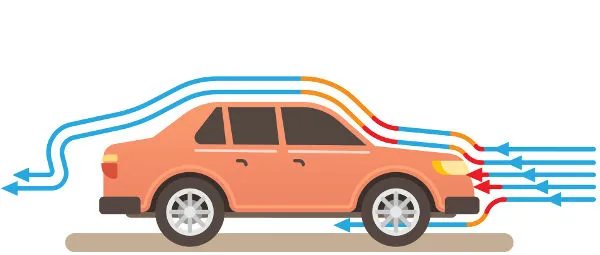
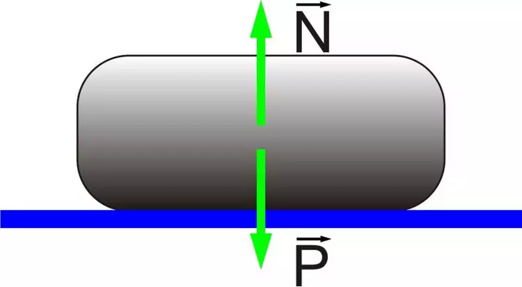
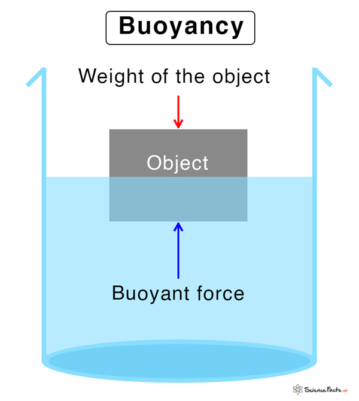
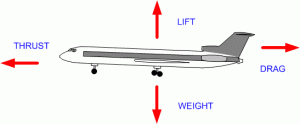
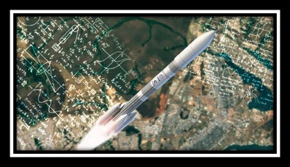
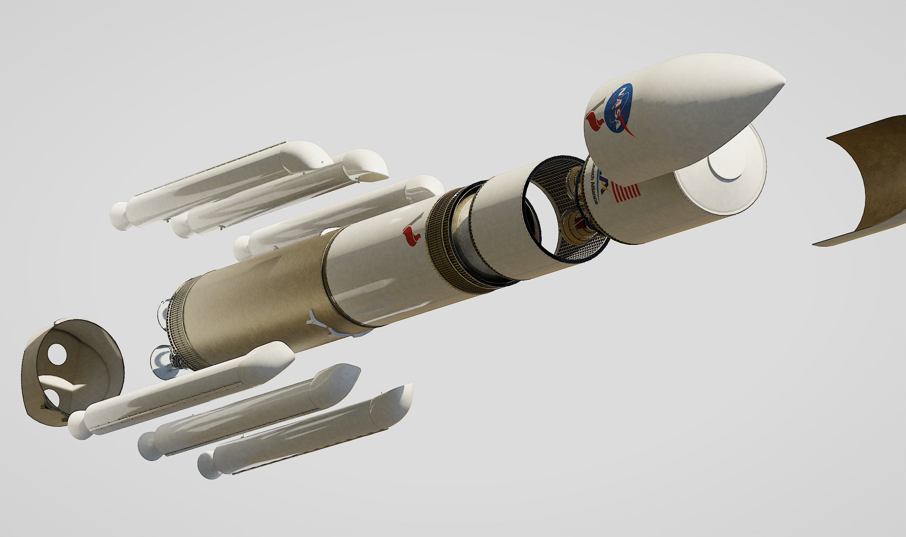
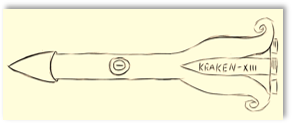
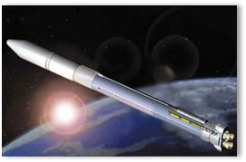

Bernoulli's Principle deals with the difference in air pressure by saying that an increase in fluid velocity corresponds to a decrease in pressure. This principle explains how an airplane can sustain itself in the air. Lift occurs because the air pressure acting on the wings is less than the air pressure acting on the bottom of the plane. In this way, the force from the bottom up is able to sustain the aircraft
The drag force is opposite to the direction of movement, therefore, the greater the resistance of the object in relation to the air, the greater its aerodynamic potential. This force is produced on the object, in the direction of flow, when the object is moving. It varies in proportion to the speed or shape of the object.
The lift force is produced on the object in the direction transverse to the flow. It opposes the weight of the object in motion, that is, to stabilize an object the support force must be equal to or greater than its weight. It is the lift force that makes it possible to lift and stabilize the object.

Weight is the greatest force exerted by the object and its direction is towards the center of the earth. That is, it is a force that always acts in the vertical direction, as a result of gravity. In a flight, the weight of the plane is the greatest force.
Thrust occurs when an amount of mass is expelled or accelerated in one direction and a force arises in the same direction, in the opposite direction. The thrust of aircraft is caused by propellers or turbines, which have the purpose of moving the plane forward.
Aerodynamics has many different applications. Currently, the aerospace industry is capable of producing any type of aircraft based on the principles of aerodynamics. They are fundamental both in the construction of the design and in the design of mechanical components. In addition, this knowledge is used to understand the ways in which atmospheric circulation and flight mechanics affect the ecosystem.
- Improved resistance and reduced turbulence in tall buildings.
- Development of combat aircraft with greater maneuverability and lower radar signature.
- Drag reduction to increase energy efficiency.
The standard model rocket consists of a cylindrical shape, with its structure based on its strength, both to be able to break air resistance and to resist applied force, and fins at its lower end to be able to maintain its lift during the launch
To ensure that the rocket is light and can reach the desired altitude, we have been proposed that its height does not exceed 1 meter. It is important to consider the diameter of the rocket to ensure stability during flight, starting with 10-15 centimeters.
We intend to use lightweight but strong materials such as PVC pipes, carbon fiber or composite materials. These materials are commonly used in the construction of amateur rockets due to their durability.
We will use two high pressure tanks to trigger the burning of energy, one for oxygen and the other for hydrogen. Both will be connected to two cores: one will be responsible for storing the gases separately and the other will be the meeting point between them.
The use of Arduino to control the rocket's thrusters will possibly be present in the finalization of the prototype. Arduino is a versatile and affordable platform for programming and controlling electronic devices.
- A common choice for rockets due to its aerodynamic stability. Helps minimize air resistance, allowing the rocket to reach higher altitudes.
- Located on top of the rocket. This shape allows air to flow smoothly around the rocket, reducing drag and improving performance. Also contributing to stability during flight.
- To ensure the directional stability of the rocket during flight, we will include fins on the back of the rocket. They help keep you on a straight path and minimize the possibility of unwanted rotation.
The Momo GX rocket has an elongated, cylindrical shape, with a conical warhead at the top. It is designed to launch small payloads to suborbital altitudes. The Momo GX has a height of approximately 10 meters and is propelled by liquid propellant engines.
